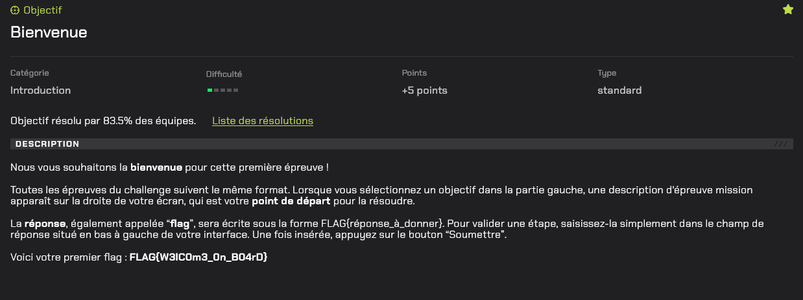
L’objectif est simplement une présentation d’introduction. Il faut uniquement entrer le flag fourni afin de valider l’étape. L’image de la page d’accueil du challenge montre l’interface de départ. On y voit un espace permettant d’entrer une réponse. Cela indique clairement qu’il faut entrer le flag pour continuer et accéder à la suite des épreuves.
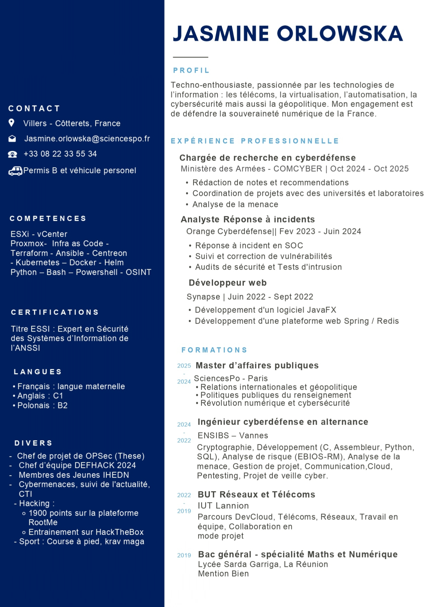
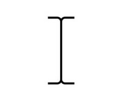
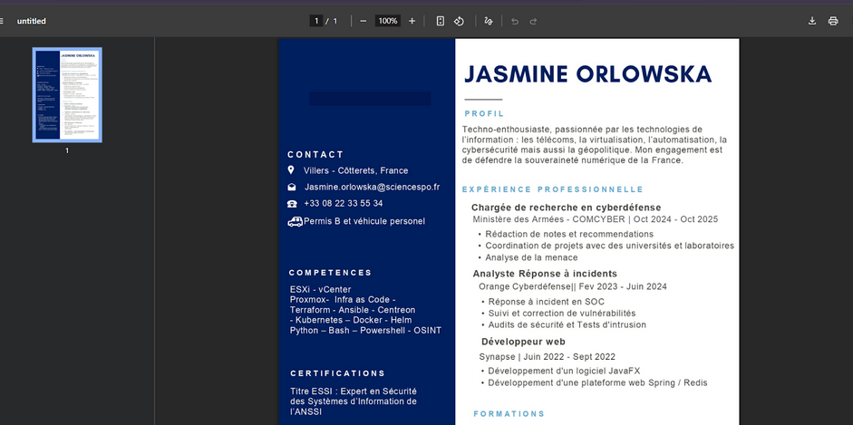
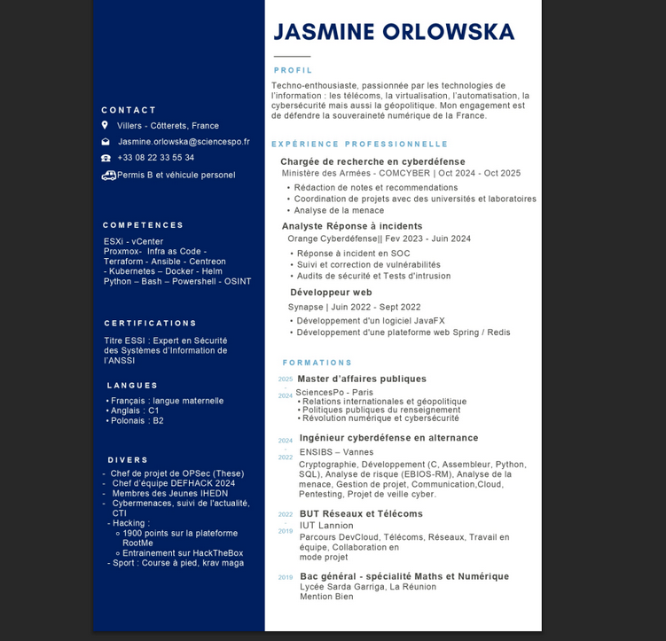
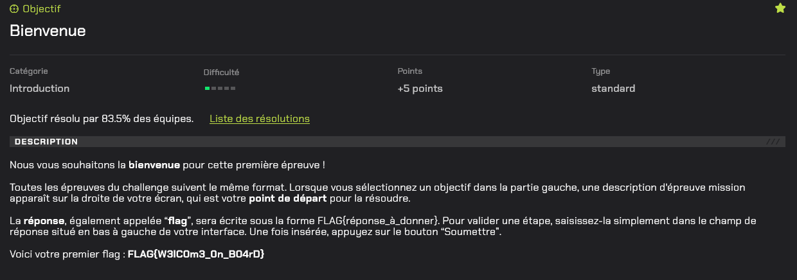
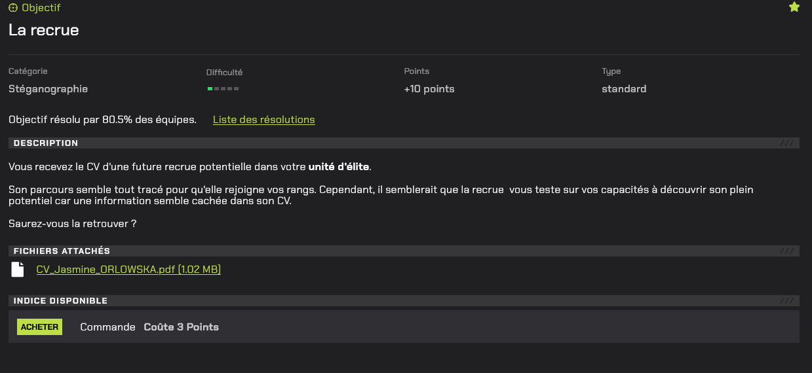
Dans cette deuxième partie, on nous fournit un fichier PDF suspect. En ouvrant le document, on remarque que le texte principal n’est pas sélectionnable et que certaines zones semblent complètement vides. En passant le curseur sur certaines zones blanches du document, celui-ci change de forme, comme s’il survolait du texte invisible. Cela indique qu’un texte caché est probablement dissimulé dans le document. La première image montre un aperçu du PDF. On voit un document classique, sans information visible suspecte. La deuxième image montre que le curseur change de forme lorsqu’il survole une zone vide, ce qui révèle qu’un contenu invisible est présent. La troisième image montre le texte sélectionné dans une zone blanche. En sélectionnant cette zone, on met en évidence un texte caché dans le document. Le flag est dissimulé dans ces zones invisibles. Ce que j’ai appris grâce à cette épreuve est que l’on ne doit pas se fier uniquement à ce qui est visible à l’écran. J’ai découvert le principe de la stéganographie, qui consiste à dissimuler une information dans un document sans qu’elle soit immédiatement visible. Cette expérience m’a permis de développer mon attention aux détails, ce qui est très important en cybersécurité. Pour le Grand Oral, je peux utiliser cet exemple pour expliquer ce qu’est la stéganographie et montrer que la menace numérique n’est pas toujours visible. Je peux également expliquer que les attaquants jouent souvent sur la confiance des utilisateurs, en cachant des informations dans des documents en apparence normaux.
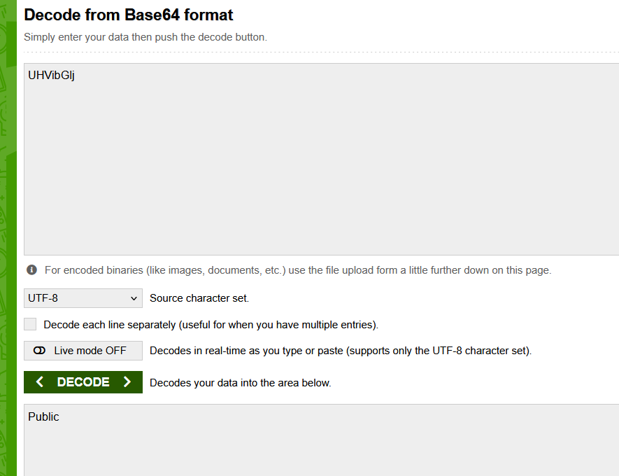
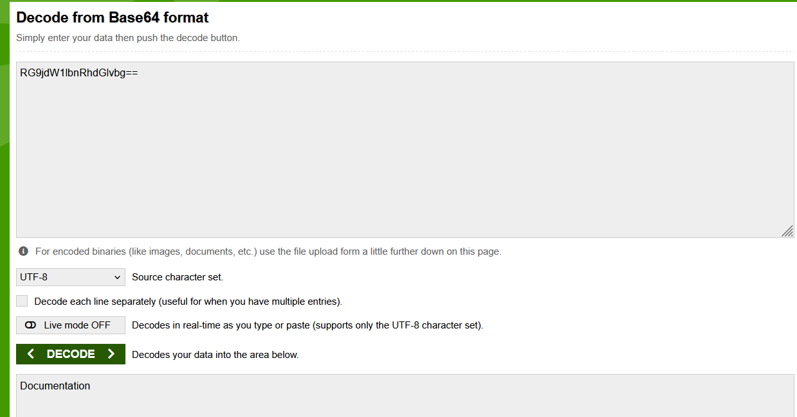
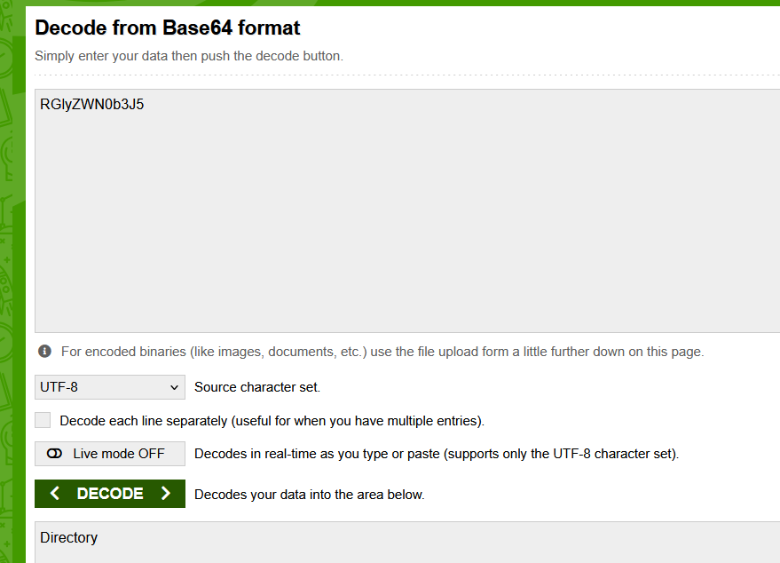
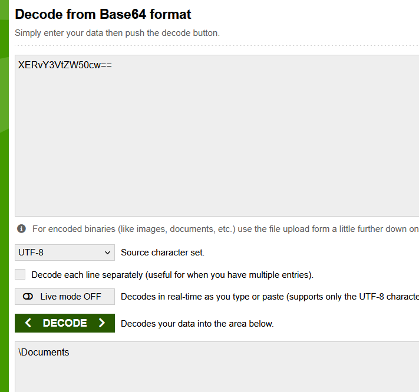
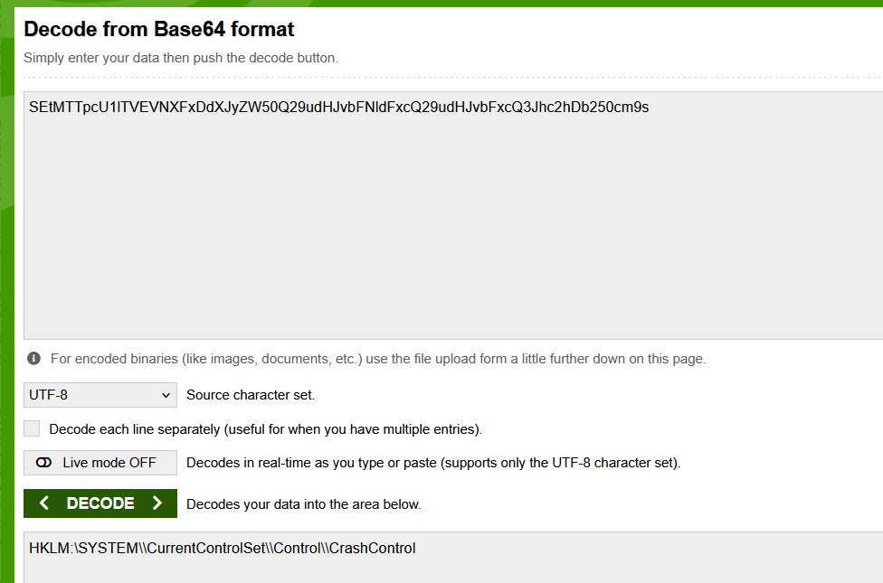
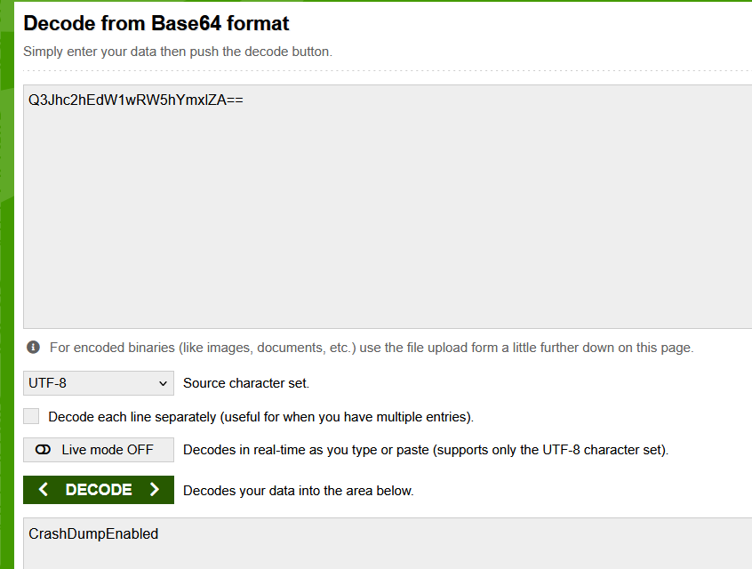
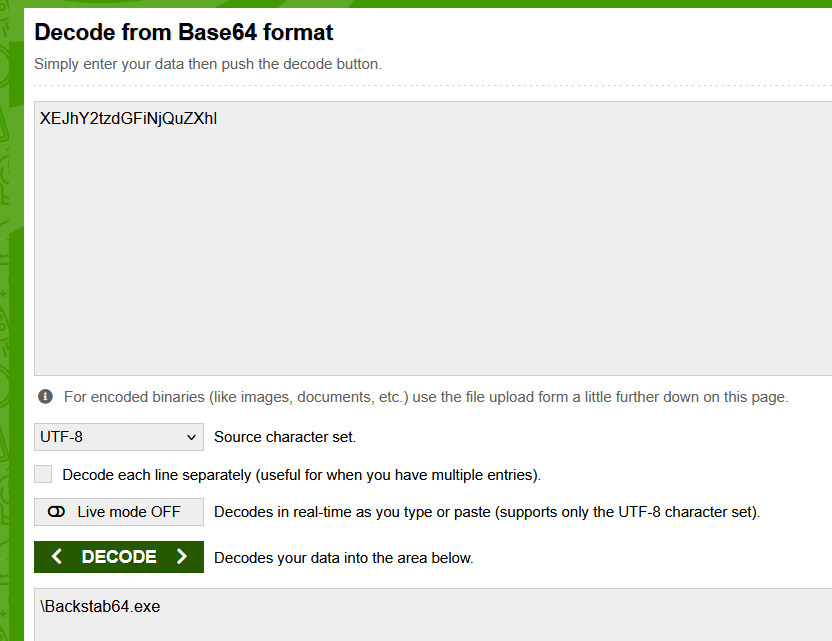
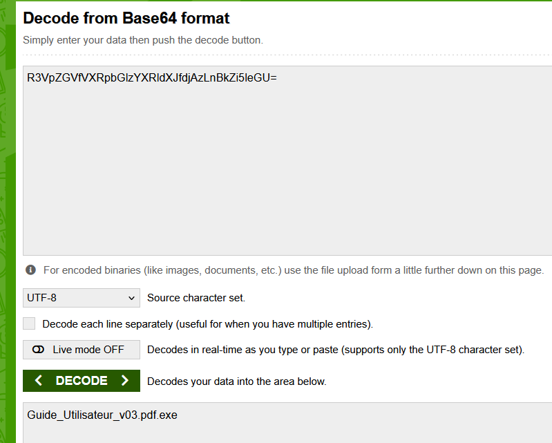
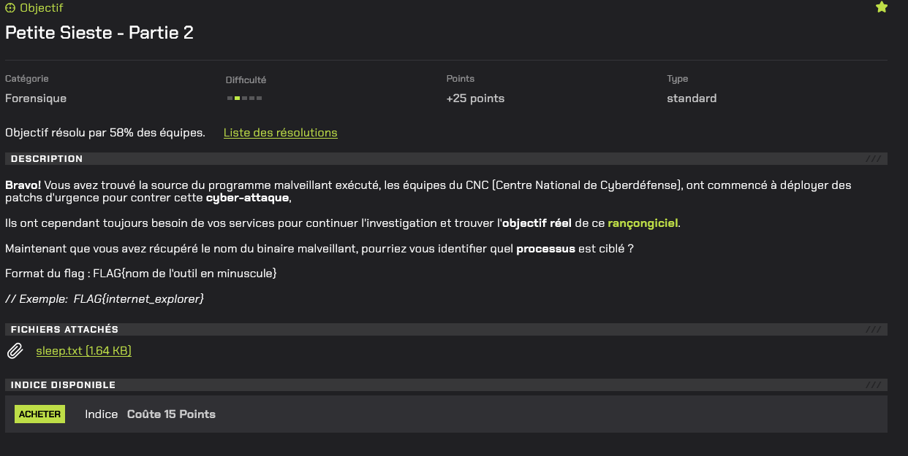
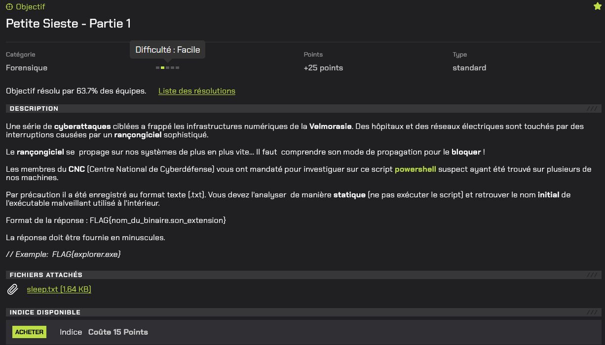
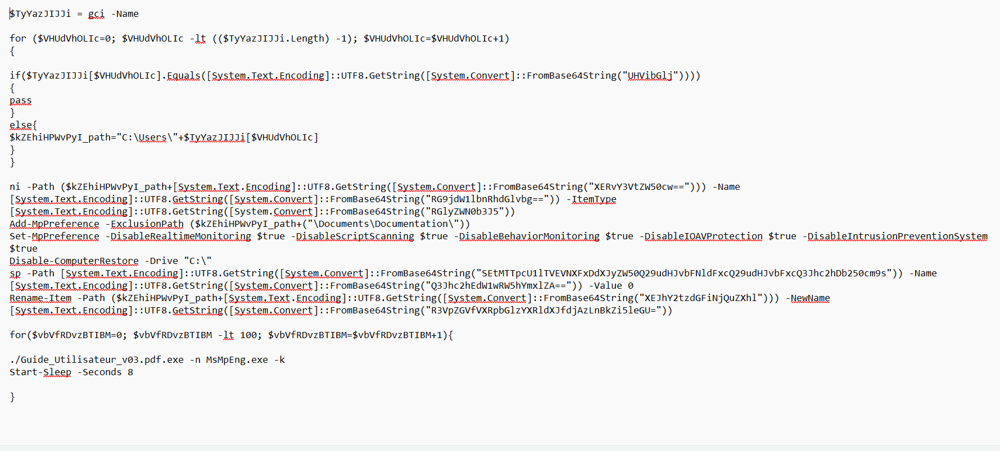
Le script commence par la commande
$TyYazJIJJi = gci -Name
qui permet de lister les dossiers présents dans le répertoire C:\Users. Ensuite, on trouve la condition
if($TyYazJIJJi[$i].Equals("UHVibGlj")) { pass }.
On remarque que le mot "UHVibGlj" est encodé en Base64. Après décodage, on obtient le mot "Public". Le script ignore donc le dossier Public et cible un véritable utilisateur du système.
L’image du décodage Base64 montre le processus permettant de transformer la chaîne encodée en texte lisible. Cela prouve que le script masque volontairement certaines informations afin de rendre l’analyse plus difficile.
Le script crée ensuite un dossier dans le chemin C:\Users\utilisateur\Documents\Documentation. Après décodage complet, la commande devient
ni -Path
L’image correspondante montre que le script crée un dossier nommé Documentation dans le dossier Documents de la victime. Ce dossier servira à stocker le malware.
Le script exécute ensuite plusieurs commandes comme
Set-MpPreference -DisableRealtimeMonitoring $true,
Set-MpPreference -DisableScriptScanning $true
Set-MpPreference -DisableBehaviorMonitoring $true.
Cela signifie que le malware désactive Windows Defender, supprime la surveillance en temps réel et désactive l’analyse comportementale. Il ajoute également une exclusion avec
Add-MpPreference -ExclusionPath
ce qui empêche l’antivirus d’analyser le dossier créé. L’image des commandes de sécurité montre clairement les instructions liées à Windows Defender, confirmant l’intention malveillante.
Le script désactive également la restauration système avec la commande
Disable-ComputerRestore -Drive "C:\".
Cela empêche toute restauration du système. Si l’attaque réussit, la victime ne pourra pas réinstaller Windows facilement ni revenir à un état antérieur.
Après décodage, on observe la modification de la clé de registre
HKLM\SYSTEM\CurrentControlSet\Control\CrashControl
avec la valeur CrashDumpEnabled = 0.
Cela empêche Windows de générer des fichiers d’analyse en cas de crash. L’image montre la clé modifiée et prouve que le malware cherche à empêcher toute analyse ultérieure.
Le script renomme ensuite le fichier Backstab64.exe en Guide_Utilisateur_v03.pdf.exe. Il s’agit d’une technique classique de double extension destinée à tromper l’utilisateur. Windows masque souvent l’extension .exe, ce qui peut faire croire qu’il s’agit d’un simple fichier PDF. L’image du décodage du nom du fichier montre la transformation du nom original vers le faux document.
Enfin, une boucle est exécutée cent fois avec la commande
./Guide_Utilisateur_v03.pdf.exe -n MsMpEng.exe -k.
MsMpEng.exe correspond au processus principal de Windows Defender. Le paramètre -k signifie qu’il doit être arrêté. Le malware tente donc de tuer Windows Defender cent fois afin de s’assurer qu’il est bien désactivé. L’image de la boucle PowerShell montre la répétition de la commande, ce qui garantit l’efficacité de l’attaque.
Ce que j’ai appris dans cette partie est que j’ai appris à décoder du Base64 afin de rendre un script lisible et compréhensible. J’ai découvert les différentes techniques utilisées par un logiciel malveillant pour s’installer sur un ordinateur, notamment la désactivation de Windows Defender, la suppression des crash dumps et la désactivation de la restauration système. J’ai également compris le principe de la double extension, utilisée pour tromper l’utilisateur en faisant passer un fichier exécutable pour un document PDF.
Pour le Grand Oral, je peux expliquer comment des personnes malveillantes cachent leurs attaques en encodant leur code et en utilisant PowerShell pour les exécuter. Je peux montrer que les cyberattaques modernes utilisent des outils légitimes du système pour contourner les protections.
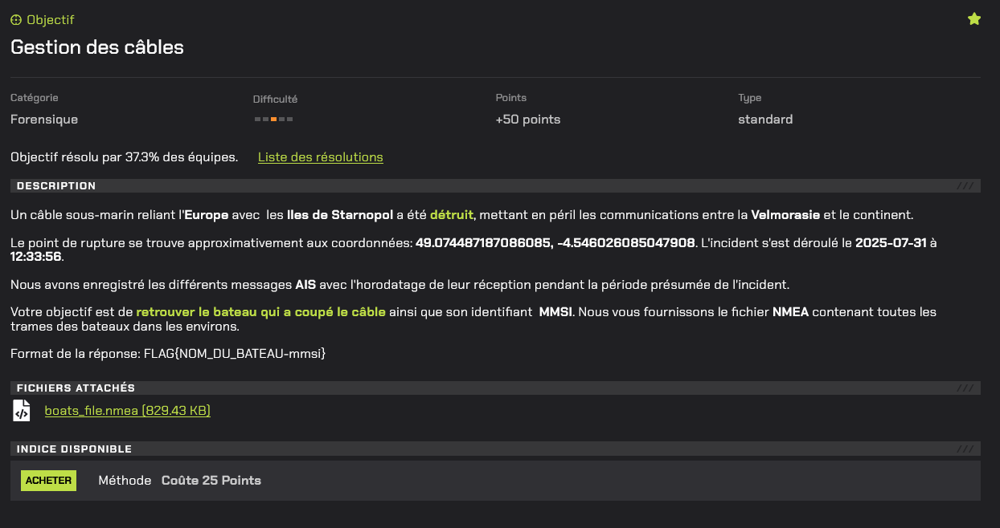
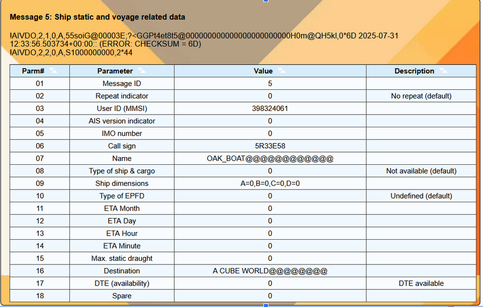
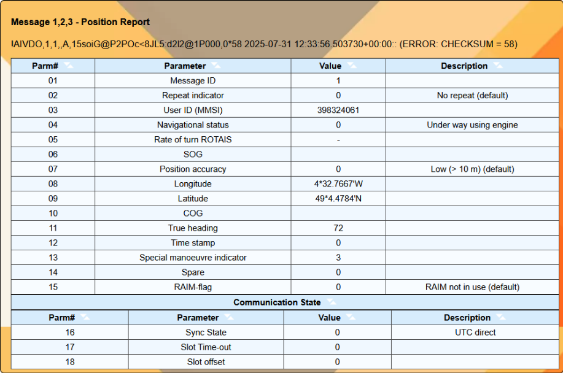
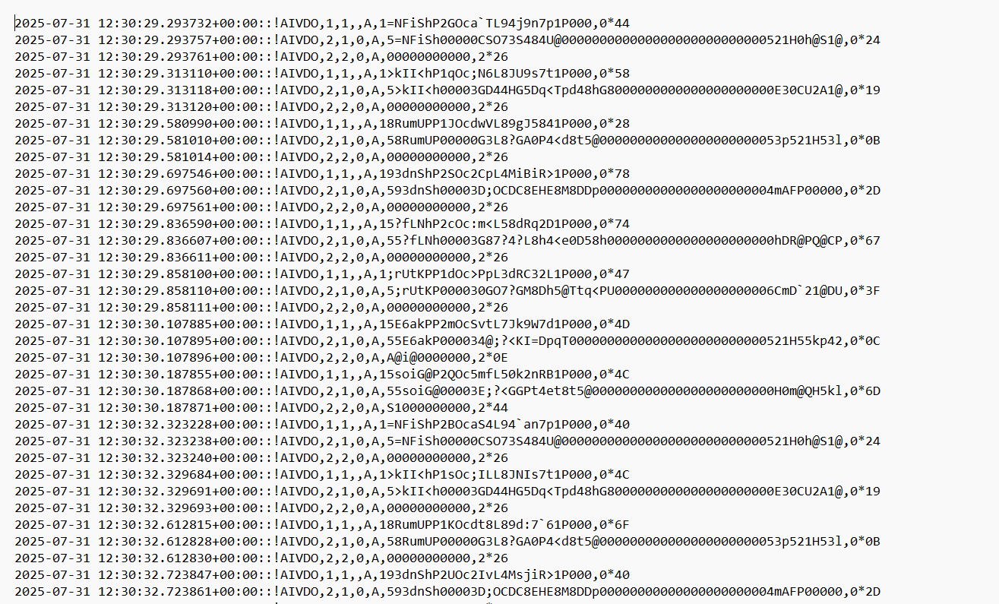
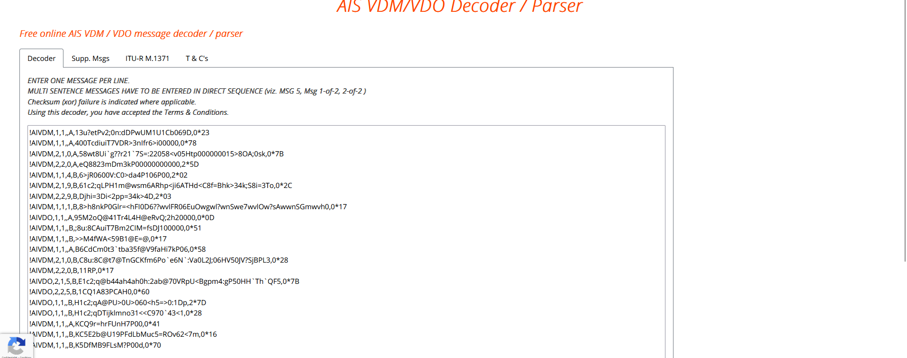
Dans cette dernière partie, on nous fournit des trames AIS comme !AIVDO,1,1,,A,1;rUtKPP1EOcBtjL3hsC5RN1P000,0*6D. Ce sont des trames AIS, c’est-à-dire des messages du système Automatic Identification System utilisé par les navires pour transmettre leur position et leur identité.
Nous avons utilisé le site https://www.maritec.co.za/aisvdmvdodecoding pour décoder ces trames. L’image du site montre l’interface où l’on colle les trames NMEA afin d’obtenir des informations lisibles. L’image des résultats du décodage affiche l’identifiant MMSI du navire, le nom du bateau, sa position GPS ainsi que la date et l’heure.
En utilisant la date du 31 juillet 2025 à 12:33:56 ainsi que les coordonnées GPS obtenues, nous avons pu identifier le navire correspondant. Le décodage permet d’obtenir l’identité du bateau, sa position et son identifiant unique. En croisant ces informations, on trouve le navire correspondant au flag attendu.
Ce que j’ai appris dans cette épreuve est que j’ai découvert le fonctionnement du système AIS utilisé par les navires. J’ai appris à décoder des trames NMEA et à interpréter des données de géolocalisation. J’ai compris que les systèmes maritimes reposent eux aussi sur des échanges de données numériques et qu’ils peuvent être analysés comme n’importe quel autre système informatique. Cette partie m’a montré que la cybersécurité ne concerne pas uniquement les ordinateurs, mais également les moyens de transport.
Pour le Grand Oral, je peux utiliser cet exemple pour montrer que la cybersécurité s’applique aussi aux infrastructures comme le transport maritime. Je peux expliquer que la géolocalisation et les systèmes embarqués peuvent représenter des points d’attaque potentiels et que la protection de ces systèmes est essentielle.